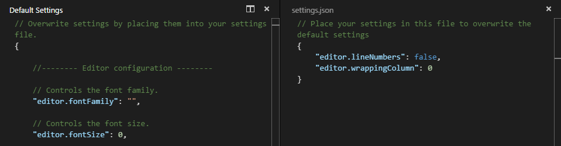

用户和工作区设置(User and Workspace Settings)
It's easy to configure VS Code the way you want by editing the various setting files where you will find a great number of settings to play with.
很容易通过编辑各种设置文件来配置VS Code，你会发现许多有意思的设置。
VS Code provides two different scopes for settings:
VS Code 的设置分为两种作用域：
- User these settings apply globally to any instance of VS Code you open
Workspace these settings are stored inside your workspace in a
.vscodefolder and only apply when the workspace is opened. Settings defined on this scope overwrite the user scope.用户设置 这些设置全局应用于您打开的任何VS Code 项目
- 工作区设置 这些设置存储在工作区内的
.vscode文件夹中，并且仅在打开的工作区适用。在此范围上定义的设置将覆盖用户范围的设置。
创建用户和工作区设置(Creating User and Workspace Settings)
The menu under File > Preferences provides entries to configure user and workspace settings. You are provided with a list of Default Settings. Copy any setting that you want to change to the related settings.json file.
文件>首选项 下的 菜单 提供用于配置用户和工作空间设置的选项。您将看到一个默认设置列表。将要更改的任何设置复制到相关的（右侧） settings.json 文件。
In the example below, we disabled line numbers in the editor and configured line wrapping to wrap automatically based on the size of the editor.
如下面的示例，我们在编辑器中禁用了 行号 ，并且配置换行为根据编辑器的大小自动换行。

Changes to settings are reloaded by VS Code after the modified settings.json file is saved.
保存修改的 settings.json 文件后，VS Code 将重新加载对设置的更改。
设置文件的位置(Settings File Locations)
Depending on your platform, the user settings file is located here:
根据您的操作系统，用户设置文件位于下面几处：
- Windows
%APPDATA%\Code\User\settings.json - Mac
$HOME/Library/Application Support/Code/User/settings.json - Linux
$HOME/.config/Code/User/settings.json
The workspace setting file is located under the .vscode folder in your project.
工作区设置文件位于项目中的 .vscode 文件夹下。
设置文件内容(Settings File Sections)
The settings.json file is divided into these sections:
settings.json 文件分为以下几个部分：
- Editor Configuration - font, word wrapping, tab size, line numbers, indentation, ...
- Window Configuration - restore folders, zoom level, ...
- Files Configuration - excluded file filters, default encoding, trim trailing whitespace, ...
- File Explorer Configuration - encoding, WORKING FILES behavior, ...
- HTTP Configuration - proxy settings
- Search Configuration - file exclude filters
- Git Configuration - disable Git integration, auto fetch behavior
- Telemetry Configuration - disable telemetry reporting, crash reporting
- HTML Configuration - HTML format configuration
- CSS Configuration - CSS linting configuration
- JavaScript Configuration - Language specific settings
- JSON Configuration - Schemas associated with certain JSON files
- Markdown Preview Configuration - Add a custom CSS to the Markdown preview
- Less Configuration - Control linting for Less
- Sass Configuration - Control linting for Sass
- TypeScript Configuration - Language specific settings
- PHP Configuration - PHP linter configuration
默认设置(Default Settings)
Below is a copy of the default settings.json file.
下面是默认的 settings.json 文件的实例。
Tip: While in the
settings.jsonfile, presskb(workbench.action.gotoSymbol)to see an outline of all available settings and navigate through the file.提示： 在
settings.json文件中，按kb（workbench.action.gotoSymbol）可查看所有可用设置的大纲，并浏览该文件。
// Overwrite settings by placing them into your settings file.
{
//-------- Editor configuration --------
// Controls the font family.
"editor.fontFamily": "",
// Controls the font size.
"editor.fontSize": 0,
// Controls the line height.
"editor.lineHeight": 0,
// Controls visibility of line numbers
"editor.lineNumbers": true,
// Controls visibility of the glyph margin
"editor.glyphMargin": false,
// Columns at which to show vertical rulers
"editor.rulers": [],
// Characters that will be used as word separators when doing word related navigations or operations
"editor.wordSeparators": "`~!@#$%^&*()-=+[{]}\\|;:'\",.<>/?",
// The number of spaces a tab is equal to.
"editor.tabSize": 4,
// Insert spaces when pressing Tab.
"editor.insertSpaces": true,
// When opening a file, `editor.tabSize` and `editor.insertSpaces` will be detected based on the file contents.
"editor.detectIndentation": true,
// Controls if selections have rounded corners
"editor.roundedSelection": true,
// Controls if the editor will scroll beyond the last line
"editor.scrollBeyondLastLine": true,
// Controls after how many characters the editor will wrap to the next line. Setting this to 0 turns on viewport width wrapping
"editor.wrappingColumn": 300,
// Controls the indentation of wrapped lines. Can be one of 'none', 'same' or 'indent'.
"editor.wrappingIndent": "same",
// A multiplier to be used on the `deltaX` and `deltaY` of mouse wheel scroll events
"editor.mouseWheelScrollSensitivity": 1,
// Controls if quick suggestions should show up or not while typing
"editor.quickSuggestions": true,
// Controls the delay in ms after which quick suggestions will show up
"editor.quickSuggestionsDelay": 10,
// Controls if the editor should automatically close brackets after opening them
"editor.autoClosingBrackets": true,
// Controls if the editor should automatically format the line after typing
"editor.formatOnType": false,
// Controls if suggestions should automatically show up when typing trigger characters
"editor.suggestOnTriggerCharacters": true,
// Controls if suggestions should be accepted 'Enter' - in addition to 'Tab'. Helps to avoid ambiguity between inserting new lines or accepting suggestions.
"editor.acceptSuggestionOnEnter": true,
// Controls whether the editor should highlight similar matches to the selection
"editor.selectionHighlight": true,
// Controls the number of decorations that can show up at the same position in the overview ruler
"editor.overviewRulerLanes": 3,
// Controls the cursor blinking animation, accepted values are 'blink', 'visible', and 'hidden'
"editor.cursorBlinking": "blink",
// Controls the cursor style, accepted values are 'block' and 'line'
"editor.cursorStyle": "line",
// Enables font ligatures
"editor.fontLigatures": false,
// Controls if the cursor should be hidden in the overview ruler.
"editor.hideCursorInOverviewRuler": false,
// Controls whether the editor should render whitespace characters
"editor.renderWhitespace": false,
// Controls if the editor shows reference information for the modes that support it
"editor.referenceInfos": true,
// Controls whether the editor has code folding enabled
"editor.folding": true,
// Controls if the diff editor shows the diff side by side or inline
"diffEditor.renderSideBySide": true,
// Controls if the diff editor shows changes in leading or trailing whitespace as diffs
"diffEditor.ignoreTrimWhitespace": true,
//-------- Window configuration --------
// When enabled, will open files in a new window instead of reusing an existing instance.
"window.openFilesInNewWindow": true,
// Controls how folders are being reopened after a restart. Select 'none' to never reopen a folder, 'one' to reopen the last folder you worked on or 'all' to reopen all folders of your last session.
"window.reopenFolders": "one",
// Adjust the zoom level of the window. The original size is 0 and each increment above (e.g. 1) or below (e.g. -1) represents zooming 20% larger or smaller. You can also enter decimals to adjust the zoom level with a finer granularity.
"window.zoomLevel": 0,
//-------- Files configuration --------
// Configure glob patterns for excluding files and folders.
"files.exclude": {
"**/.git": true,
"**/.DS_Store": true
},
// Configure file associations to languages (e.g. "*.extension": "html"). These have precedence over the default associations of the languages installed.
"files.associations": {},
// The default character set encoding to use when reading and writing files.
"files.encoding": "utf8",
// The default end of line character.
"files.eol": "\n",
// When enabled, will trim trailing whitespace when you save a file.
"files.trimTrailingWhitespace": false,
// Controls auto save of dirty files. Accepted values: "off", "afterDelay", "onFocusChange". If set to "afterDelay" you can configure the delay in "files.autoSaveDelay".
"files.autoSave": "off",
// Controls the delay in ms after which a dirty file is saved automatically. Only applies when "files.autoSave" is set to "afterDelay"
"files.autoSaveDelay": 1000,
// Configure glob patterns of file paths to exclude from file watching. Changing this setting requires a restart. When you experience Code consuming lots of cpu time on startup, you can exclude large folders to reduce the initial load.
"files.watcherExclude": {
"**/.git/objects/**": true,
"**/node_modules/**": true
},
//-------- File Explorer configuration --------
// Maximum number of working files to show before scrollbars appear.
"explorer.workingFiles.maxVisible": 9,
// Controls if the height of the working files section should adapt dynamically to the number of elements or not.
"explorer.workingFiles.dynamicHeight": true,
//-------- HTTP configuration --------
// The proxy setting to use. If not set will be taken from the http_proxy and https_proxy environment variables
"http.proxy": "",
// Whether the proxy server certificate should be verified against the list of supplied CAs.
"http.proxyStrictSSL": true,
//-------- Update configuration --------
// Configure the update channel to receive updates from. Requires a restart after change.
"update.channel": "default",
//-------- Search configuration --------
// Configure glob patterns for excluding files and folders in searches. Inherits all glob patterns from the file.exclude setting.
"search.exclude": {
"**/node_modules": true,
"**/bower_components": true
},
//-------- Git configuration --------
// Is git enabled
"git.enabled": true,
// Path to the git executable
"git.path": null,
// Whether auto fetching is enabled.
"git.autofetch": true,
//-------- Telemetry configuration --------
// Enable usage data and errors to be sent to Microsoft.
"telemetry.enableTelemetry": true,
//-------- Markdown preview configuration --------
// A list of URLs or local paths to CSS style sheets to use from the markdown preview.
"markdown.styles": [],
//-------- JSON configuration --------
// Associate schemas to JSON files in the current project
"json.schemas": [],
//-------- HTML configuration --------
// Maximum amount of characters per line (0 = disable).
"html.format.wrapLineLength": 120,
// List of tags, comma separated, that shouldn't be reformatted. 'null' defaults to all inline tags.
"html.format.unformatted": null,
// Indent <head> and <body> sections.
"html.format.indentInnerHtml": false,
// Whether existing line breaks before elements should be preserved. Only works before elements, not inside tags or for text.
"html.format.preserveNewLines": true,
// Maximum number of line breaks to be preserved in one chunk. Use 'null' for unlimited.
"html.format.maxPreserveNewLines": null,
// Format and indent {{#foo}} and {{/foo}}.
"html.format.indentHandlebars": false,
// End with a newline.
"html.format.endWithNewline": false,
// List of tags, comma separated, that should have an extra newline before them. 'null' defaults to "head, body, /html".
"html.format.extraLiners": null,
//-------- Telemetry configuration --------
// Enable crash reports to be sent to Microsoft.
// This option requires restart to take effect.
"telemetry.enableCrashReporter": true,
//-------- CSS configuration --------
// Controls CSS validation and problem severities.
// Enables or disables all validations
"css.validate": true,
// When using a vendor-specific prefix make sure to also include all other vendor-specific properties
"css.lint.compatibleVendorPrefixes": "ignore",
// When using a vendor-specific prefix also include the standard property
"css.lint.vendorPrefix": "warning",
// Do not use duplicate style definitions
"css.lint.duplicateProperties": "ignore",
// Do not use empty rulesets
"css.lint.emptyRules": "warning",
// Import statements do not load in parallel
"css.lint.importStatement": "ignore",
// Do not use width or height when using padding or border
"css.lint.boxModel": "ignore",
// The universal selector (*) is known to be slow
"css.lint.universalSelector": "ignore",
// No unit for zero needed
"css.lint.zeroUnits": "ignore",
// @font-face rule must define 'src' and 'font-family' properties
"css.lint.fontFaceProperties": "warning",
// Hex colors must consist of three or six hex numbers
"css.lint.hexColorLength": "error",
// Invalid number of parameters
"css.lint.argumentsInColorFunction": "error",
// Unknown property.
"css.lint.unknownProperties": "warning",
// IE hacks are only necessary when supporting IE7 and older
"css.lint.ieHack": "ignore",
// Unknown vendor specific property.
"css.lint.unknownVendorSpecificProperties": "ignore",
// Property is ignored due to the display. E.g. with 'display: inline', the width, height, margin-top, margin-bottom, and float properties have no effect
"css.lint.propertyIgnoredDueToDisplay": "warning",
// Avoid using !important. It is an indication that the specificity of the entire CSS has gotten out of control and needs to be refactored.
"css.lint.important": "ignore",
// Avoid using 'float'. Floats lead to fragile CSS that is easy to break if one aspect of the layout changes.
"css.lint.float": "ignore",
// Selectors should not contain IDs because these rules are too tightly coupled with the HTML.
"css.lint.idSelector": "ignore",
//-------- LESS configuration --------
// Controls LESS validation and problem severities.
// Enables or disables all validations
"less.validate": true,
// When using a vendor-specific prefix make sure to also include all other vendor-specific properties
"less.lint.compatibleVendorPrefixes": "ignore",
// When using a vendor-specific prefix also include the standard property
"less.lint.vendorPrefix": "warning",
// Do not use duplicate style definitions
"less.lint.duplicateProperties": "ignore",
// Do not use empty rulesets
"less.lint.emptyRules": "warning",
// Import statements do not load in parallel
"less.lint.importStatement": "ignore",
// Do not use width or height when using padding or border
"less.lint.boxModel": "ignore",
// The universal selector (*) is known to be slow
"less.lint.universalSelector": "ignore",
// No unit for zero needed
"less.lint.zeroUnits": "ignore",
// @font-face rule must define 'src' and 'font-family' properties
"less.lint.fontFaceProperties": "warning",
// Hex colors must consist of three or six hex numbers
"less.lint.hexColorLength": "error",
// Invalid number of parameters
"less.lint.argumentsInColorFunction": "error",
// Unknown property.
"less.lint.unknownProperties": "warning",
// IE hacks are only necessary when supporting IE7 and older
"less.lint.ieHack": "ignore",
// Unknown vendor specific property.
"less.lint.unknownVendorSpecificProperties": "ignore",
// Property is ignored due to the display. E.g. with 'display: inline', the width, height, margin-top, margin-bottom, and float properties have no effect
"less.lint.propertyIgnoredDueToDisplay": "warning",
// Avoid using !important. It is an indication that the specificity of the entire CSS has gotten out of control and needs to be refactored.
"less.lint.important": "ignore",
// Avoid using 'float'. Floats lead to fragile CSS that is easy to break if one aspect of the layout changes.
"less.lint.float": "ignore",
// Selectors should not contain IDs because these rules are too tightly coupled with the HTML.
"less.lint.idSelector": "ignore",
//-------- Sass configuration --------
// Controls Sass validation and problem severities.
// Enables or disables all validations
"sass.validate": true,
// When using a vendor-specific prefix make sure to also include all other vendor-specific properties
"sass.lint.compatibleVendorPrefixes": "ignore",
// When using a vendor-specific prefix also include the standard property
"sass.lint.vendorPrefix": "warning",
// Do not use duplicate style definitions
"sass.lint.duplicateProperties": "ignore",
// Do not use empty rulesets
"sass.lint.emptyRules": "warning",
// Import statements do not load in parallel
"sass.lint.importStatement": "ignore",
// Do not use width or height when using padding or border
"sass.lint.boxModel": "ignore",
// The universal selector (*) is known to be slow
"sass.lint.universalSelector": "ignore",
// No unit for zero needed
"sass.lint.zeroUnits": "ignore",
// @font-face rule must define 'src' and 'font-family' properties
"sass.lint.fontFaceProperties": "warning",
// Hex colors must consist of three or six hex numbers
"sass.lint.hexColorLength": "error",
// Invalid number of parameters
"sass.lint.argumentsInColorFunction": "error",
// Unknown property.
"sass.lint.unknownProperties": "warning",
// IE hacks are only necessary when supporting IE7 and older
"sass.lint.ieHack": "ignore",
// Unknown vendor specific property.
"sass.lint.unknownVendorSpecificProperties": "ignore",
// Property is ignored due to the display. E.g. with 'display: inline', the width, height, margin-top, margin-bottom, and float properties have no effect
"sass.lint.propertyIgnoredDueToDisplay": "warning",
// Avoid using !important. It is an indication that the specificity of the entire CSS has gotten out of control and needs to be refactored.
"sass.lint.important": "ignore",
// Avoid using 'float'. Floats lead to fragile CSS that is easy to break if one aspect of the layout changes.
"sass.lint.float": "ignore",
// Selectors should not contain IDs because these rules are too tightly coupled with the HTML.
"sass.lint.idSelector": "ignore",
//-------- TypeScript configuration --------
// Specifies the folder path containing the tsserver and lib*.d.ts files to use.
"typescript.tsdk": null,
// Complete functions with their parameter signature.
"typescript.useCodeSnippetsOnMethodSuggest": false,
// Enable / disable TypeScript validation
"typescript.validate.enable": true,
// Defines space handling after a comma delimiter
"typescript.format.insertSpaceAfterCommaDelimiter": true,
// Defines space handling after a semicolon in a for statement
"typescript.format.insertSpaceAfterSemicolonInForStatements": true,
// Defines space handling after a binary operator
"typescript.format.insertSpaceBeforeAndAfterBinaryOperators": true,
// Defines space handling after keywords in control flow statement
"typescript.format.insertSpaceAfterKeywordsInControlFlowStatements": true,
// Defines space handling after function keyword for anonymous functions
"typescript.format.insertSpaceAfterFunctionKeywordForAnonymousFunctions": true,
// Defines space handling after opening and before closing non empty parenthesis
"typescript.format.insertSpaceAfterOpeningAndBeforeClosingNonemptyParenthesis": false,
// Defines space handling after opening and before closing non empty brackets
"typescript.format.insertSpaceAfterOpeningAndBeforeClosingNonemptyBrackets": false,
// Defines whether an open brace is put onto a new line for functions or not
"typescript.format.placeOpenBraceOnNewLineForFunctions": false,
// Defines whether an open brace is put onto a new line for control blocks or not
"typescript.format.placeOpenBraceOnNewLineForControlBlocks": false,
// Enable / disable JavaScript validation
"javascript.validate.enable": true,
// Defines space handling after a comma delimiter
"javascript.format.insertSpaceAfterCommaDelimiter": true,
// Defines space handling after a semicolon in a for statement
"javascript.format.insertSpaceAfterSemicolonInForStatements": true,
// Defines space handling after a binary operator
"javascript.format.insertSpaceBeforeAndAfterBinaryOperators": true,
// Defines space handling after keywords in control flow statement
"javascript.format.insertSpaceAfterKeywordsInControlFlowStatements": true,
// Defines space handling after function keyword for anonymous functions
"javascript.format.insertSpaceAfterFunctionKeywordForAnonymousFunctions": true,
// Defines space handling after opening and before closing non empty parenthesis
"javascript.format.insertSpaceAfterOpeningAndBeforeClosingNonemptyParenthesis": false,
// Defines space handling after opening and before closing non empty brackets
"javascript.format.insertSpaceAfterOpeningAndBeforeClosingNonemptyBrackets": false,
// Defines whether an open brace is put onto a new line for functions or not
"javascript.format.placeOpenBraceOnNewLineForFunctions": false,
// Defines whether an open brace is put onto a new line for control blocks or not
"javascript.format.placeOpenBraceOnNewLineForControlBlocks": false,
//-------- PHP Configuration options --------
// Whether php validation is enabled or not.
"php.validate.enable": true,
// Points to the php executable.
"php.validate.executablePath": null,
// Whether the linter is run on save or on type.
"php.validate.run": "onSave"
}
Common Questions
Q: When does it make sense to use workspace settings?
A: If you're using a workspace that needs custom settings but you don't want to apply them to your other VS Code projects. A good example is language-specific linting rules.